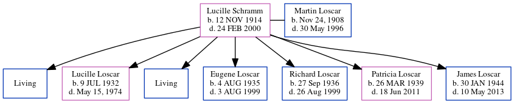

Lucille A Loscar (née Schramm) 1914 - 2000
[ Home ] | [ Calendar ] | [ Surnames Index ] | [ Census Index ] | [ Family History ]Lucille Schramm, the wife of Martin J Loscar (the great-uncle of Michele Copp (née Phillips)), was born in Ross Twp., PA on Nov 12, 19141,2 and married Martin (with whom she had 7 children: Martin, Lucille, Edward, Eugene Louis, Richard, Patricia and James H., along with 2 surviving children) in 1930.
During her life, she was living in Pittsburgh, Allegheny, Pennsylvania in 19351; in Franklin, Allegheny, Pennsylvania, USA on Apr 1, 19401; and in West View, Pennsylvania in 19502.
She died on Feb 24, 2000 in Wexford, Pennsylvania.
Children
- Lucille was born on Jul 9, 1932
- Eugene Louis was born on Aug 4, 1935
- Richard was born on Sep 27, 1936
- Patricia was born on Mar 26, 1939
- James H. was born on Jan 30, 1944
Citations
- 1940 United States Federal Census Ancestry.com Operations, Inc. (Marital Status: Married; Relation to Head of House: Wife)
- 1950 United States Federal Census Ancestry.com Operations, Inc. (Department of Commerce. Bureau of the Census. 1913-1/1/1972. Population Schedules for the 1950 Census, 1950 - 1950. Washington, DC: National Archives at Washington, DC. Population Schedules for the 1950 Census, 1950 - 1950. NAID: 43290879. Records of the Bureau of the Census, 1790 - 2007, Record Group 29. National Archives at Washington, DC., Washington, DC.) (Relation to Head: Wife; Marital Status: Married)
Family Tree
Generated by ged2site. Last updated on Jun 10, 2024